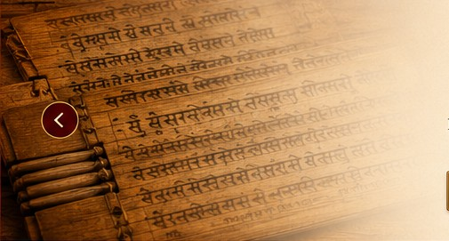

Original Text
Devanagari, transliteration and regional scripts.

A student-friendly repository for Sūtras, Vedic texts, articles, meanings, traditional commentaries, explanations, Prayoga and cross-references.
Search the LibraryOrganized as a reference library—not a course website. Open exactly the text or topic you need.
Sūtra text with scripts, translation, word meaning, explanations, Prayoga and cross-references.
Browse Sūtras →Domestic ritual texts arranged for quick navigation and layered understanding.
Browse Sūtras →Text, meaning, Bhāṣya-related material, Viniyoga/Prayoga and references as verified material is added.
Browse Texts →Topic-based knowledge articles that connect Śāstra passages, traditional interpretations and references.
Browse Articles →Students can begin with the simple view and progressively open deeper explanatory layers without losing the original text.
Devanagari, transliteration and regional scripts.
Padārtha / word meaning for close study.
Clear translation separated from commentary.
A student-friendly first understanding of the passage.
Multiple Bhāṣya, Vṛtti, Ṭīkā or other attested commentarial traditions can be stored independently.
Ritual application, usage, notes and contextual explanation.
Related Śruti, Smṛti, Sūtra and other source connections.
Edition, page, variant reading and verification metadata kept behind the knowledge record.
Future topic pages can gather all relevant Sūtras, mantras, articles and commentaries into one student-friendly reference view.
The interface may be simple for students, while the underlying content remains source-aware and human-reviewed.
Preserve the text and its traditional structure.
Keep different commentaries separately attributed.
Compare interpretations without silently merging them.
Attach source and verification information to every public knowledge record.